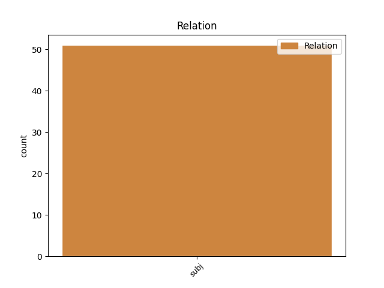
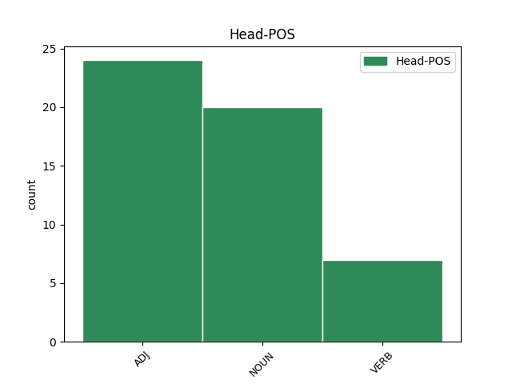
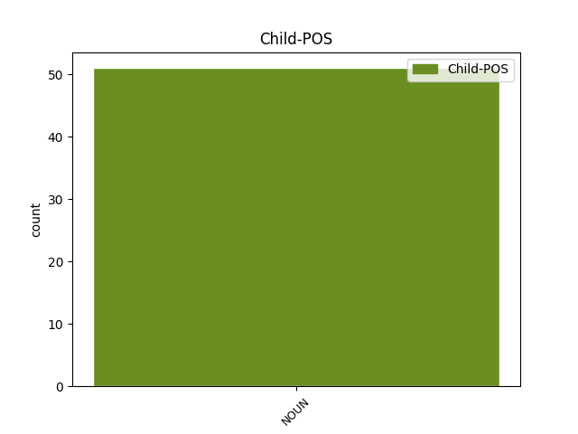

Distribution of features within this leaf



Agreement Rules sorted by frequency.
- When the dependent token is the subject(subj) of the head token, and the dependent token is NOUN.
1 approvata approvare VERB V Gender=Fem|Number=Sing|Tense=Past|VerbForm=Part 0 _ _ _
2 la _ _ _ _ 0 _ _ _
3 fiducia fiducia NOUN S Gender=Fem|Number=Sing 1 subj _ _
4 su _ _ _ _ 0 _ _ _
5 l' _ _ _ _ 0 _ _ _
6 emendamento _ _ _ _ 0 _ _ _
7 a _ _ _ _ 0 _ _ _
8 la _ _ _ _ 0 _ _ _
9 manovra _ _ _ _ 0 _ _ _
10 economica _ _ _ _ 0 _ _ _
11 di _ _ _ _ 0 _ _ _
12 il _ _ _ _ 0 _ _ _
13 governo _ _ _ _ 0 _ _ _
14 #Monti _ _ _ _ 0 _ _ _
15 . _ _ _ _ 0 _ _ _
16 495 _ _ _ _ 0 _ _ _
17 voti _ _ _ _ 0 _ _ _
18 a _ _ _ _ 0 _ _ _
19 favore _ _ _ _ 0 _ _ _
20 e _ _ _ _ 0 _ _ _
21 88 _ _ _ _ 0 _ _ _
22 contrari _ _ _ _ 0 _ _ _
23 , _ _ _ _ 0 _ _ _
24 4 _ _ _ _ 0 _ _ _
25 astenuti _ _ _ _ 0 _ _ _
26 . _ _ _ _ 0 _ _ _
Disagree Examples:
1 BERTONE _ _ _ _ 0 _ _ _
2 : _ _ _ _ 0 _ _ _
3 SACRIFICI sacrificio NOUN S Gender=Masc|Number=Plur 4 subj _ _
4 PARTE parte NOUN S Gender=Fem|Number=Sing 0 _ _ _
5 DI _ _ _ _ 0 _ _ _
6 LA _ _ _ _ 0 _ _ _
7 VITA _ _ _ _ 0 _ _ _
8 . _ _ _ _ 0 _ _ _
9 Commentando _ _ _ _ 0 _ _ _
10 la _ _ _ _ 0 _ _ _
11 manovra _ _ _ _ 0 _ _ _
12 finanziaria _ _ _ _ 0 _ _ _
13 di _ _ _ _ 0 _ _ _
14 il _ _ _ _ 0 _ _ _
15 governo _ _ _ _ 0 _ _ _
16 Monti _ _ _ _ 0 _ _ _
17 , _ _ _ _ 0 _ _ _
18 il _ _ _ _ 0 _ _ _
19 Segretario _ _ _ _ 0 _ _ _
20 di _ _ _ _ 0 _ _ _
21 Stato _ _ _ _ 0 _ _ _
22 Vaticano _ _ _ _ 0 _ _ _
23 , _ _ _ _ 0 _ _ _
24 ha _ _ _ _ 0 _ _ _
25 dichiarato _ _ _ _ 0 _ _ _
26 : _ _ _ _ 0 _ _ _
1 Napolitano _ _ _ _ 0 _ _ _
2 : _ _ _ _ 0 _ _ _
3 Nascita nascita NOUN S Gender=Fem|Number=Sing 6 subj _ _
4 Governo _ _ _ _ 0 _ _ _
5 #Monti _ _ _ _ 0 _ _ _
6 epilogo epilogo NOUN S Gender=Masc|Number=Sing 0 _ _ _
7 di _ _ _ _ 0 _ _ _
8 una _ _ _ _ 0 _ _ _
9 crisi _ _ _ _ 0 _ _ _
10 politica _ _ _ _ 0 _ _ _
11 di _ _ _ _ 0 _ _ _
12 cui _ _ _ _ 0 _ _ _
13 #Berlusconi _ _ _ _ 0 _ _ _
14 ha _ _ _ _ 0 _ _ _
15 responsabilmente _ _ _ _ 0 _ _ _
16 preso _ _ _ _ 0 _ _ _
17 atto _ _ _ _ 0 _ _ _
18 . _ _ _ _ 0 _ _ _
19 #2012 _ _ _ _ 0 _ _ _
20 #Italia _ _ _ _ 0 _ _ _
21 #news _ _ _ _ 0 _ _ _
1 la _ _ _ _ 0 _ _ _
2 lega _ _ _ _ 0 _ _ _
3 va _ _ _ _ 0 _ _ _
4 a _ _ _ _ 0 _ _ _
5 l' _ _ _ _ 0 _ _ _
6 opposizione _ _ _ _ 0 _ _ _
7 , _ _ _ _ 0 _ _ _
8 il _ _ _ _ 0 _ _ _
9 pd _ _ _ _ 0 _ _ _
10 si _ _ _ _ 0 _ _ _
11 suicida _ _ _ _ 0 _ _ _
12 in _ _ _ _ 0 _ _ _
13 un _ _ _ _ 0 _ _ _
14 governo _ _ _ _ 0 _ _ _
15 con _ _ _ _ 0 _ _ _
16 udc _ _ _ _ 0 _ _ _
17 e _ _ _ _ 0 _ _ _
18 pdl _ _ _ _ 0 _ _ _
19 , _ _ _ _ 0 _ _ _
20 silvio _ _ _ _ 0 _ _ _
21 risorge _ _ _ _ 0 _ _ _
22 , _ _ _ _ 0 _ _ _
23 proprio _ _ _ _ 0 _ _ _
24 un' _ _ _ _ 0 _ _ _
25 ottima _ _ _ _ 0 _ _ _
26 idea idea NOUN S Gender=Fem|Number=Sing 0 _ _ _
27 il _ _ _ _ 0 _ _ _
28 governo governo NOUN S Gender=Masc|Number=Sing 26 subj _ _
29 Monti _ _ _ _ 0 _ _ _
30 ... _ _ _ _ 0 _ _ _
1 " _ _ _ _ 0 _ _ _
2 vasco _ _ _ _ 0 _ _ _
3 a _ _ _ _ 0 _ _ _
4 la _ _ _ _ 0 _ _ _
5 scala _ _ _ _ 0 _ _ _
6 *_______________________* _ _ _ _ 0 _ _ _
7 oddio _ _ _ _ 0 _ _ _
8 è _ _ _ _ 0 _ _ _
9 un _ _ _ _ 0 _ _ _
10 mito _ _ _ _ 0 _ _ _
11 che _ _ _ _ 0 _ _ _
12 spettacolo spettacolo NOUN S Gender=Masc|Number=Sing 0 _ _ _
13 le _ _ _ _ 0 _ _ _
14 canzoni canzone NOUN S Gender=Fem|Number=Plur 12 subj _ _
15 riadattate _ _ _ _ 0 _ _ _
16 " _ _ _ _ 0 _ _ _
17 #porcodio _ _ _ _ 0 _ _ _
1 Bravi bravo ADJ A Gender=Masc|Number=Plur 0 _ _ _
2 a _ _ _ _ 0 _ _ _
3 scuola _ _ _ _ 0 _ _ _
4 : _ _ _ _ 0 _ _ _
5 La _ _ _ _ 0 _ _ _
6 sinistra sinistra NOUN S Gender=Fem|Number=Sing 1 subj _ SpaceAfter=No
7 , _ _ _ _ 0 _ _ _
8 le _ _ _ _ 0 _ _ _
9 élites _ _ _ _ 0 _ _ _
10 e _ _ _ _ 0 _ _ _
11 i _ _ _ _ 0 _ _ _
12 banchi _ _ _ _ 0 _ _ _
13 di _ _ _ _ 0 _ _ _
14 la _ _ _ _ 0 _ _ _
15 terza _ _ _ _ 0 _ _ _
16 fila _ _ _ _ 0 _ _ _
17 in _ _ _ _ 0 _ _ _
18 l' _ _ _ _ 0 _ _ _
19 Italia _ _ _ _ 0 _ _ _
20 di _ _ _ _ 0 _ _ _
21 il _ _ _ _ 0 _ _ _
22 governo _ _ _ _ 0 _ _ _
23 Monti _ _ _ _ 0 _ _ _
24 , _ _ _ _ 0 _ _ _
25 di _ _ _ _ 0 _ _ _
26 Giuseppe _ _ _ _ 0 _ _ _
27 Pr... _ _ _ _ 0 _ _ _
28 http://t.co/d5YVONq7 _ _ _ _ 0 _ _ _